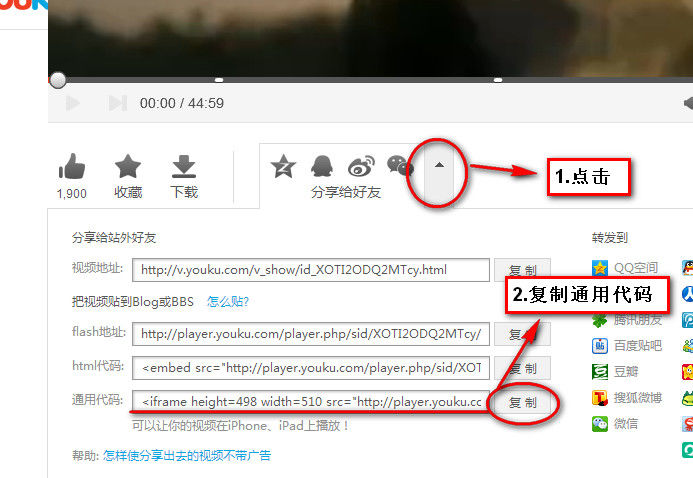
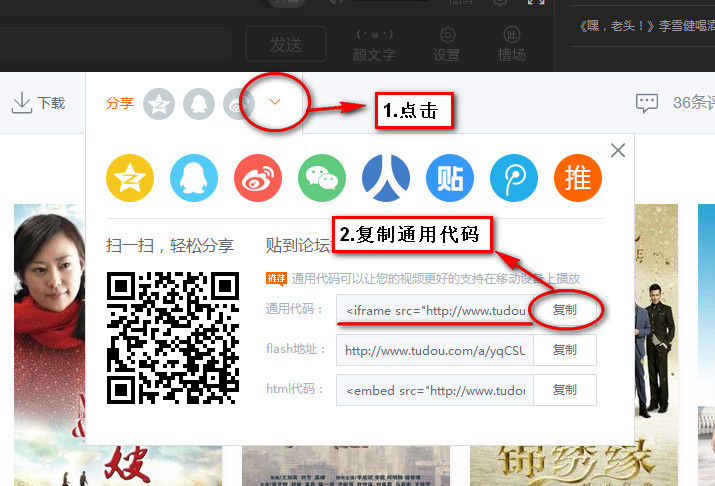
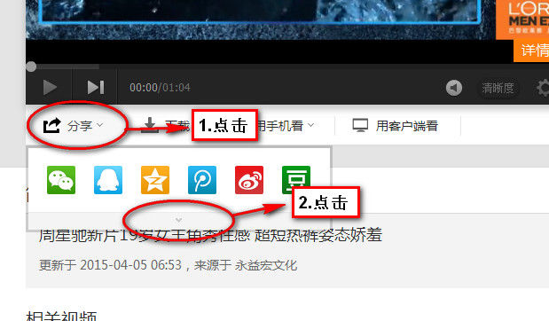
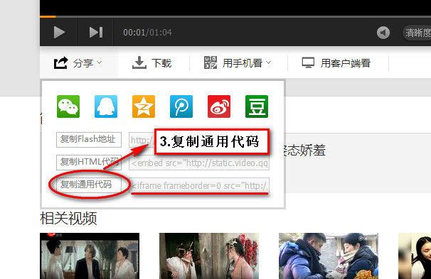

视频控件：如何获取视频通用代码？
视频控件，目前只支持优酷网、土豆网、腾讯视频等3家视频网站的视频，其他视频网站暂时不支持。
下面介绍如何获取视频网站的视频地址：
一、优酷网：（www.youku.com）
（1）点击视频播放画面下方的“分享给好友”旁边的小箭头。
（2）在向下展开的界面中，复制“通用代码”地址即可。

二、土豆网：（www.tudou.com）
（1）点击视频播放画面下方的“分享”后面的小箭头。
（2）在向下展开的界面中，复制“通用代码”地址即可。

三、腾讯视频：（v.qq.com）
（1）点击视频播放画面下方的“分享”后面的小箭头。
（2）在向下展开的界面中，点击下方的小箭头。
（3）复制“通用代码”地址即可。

